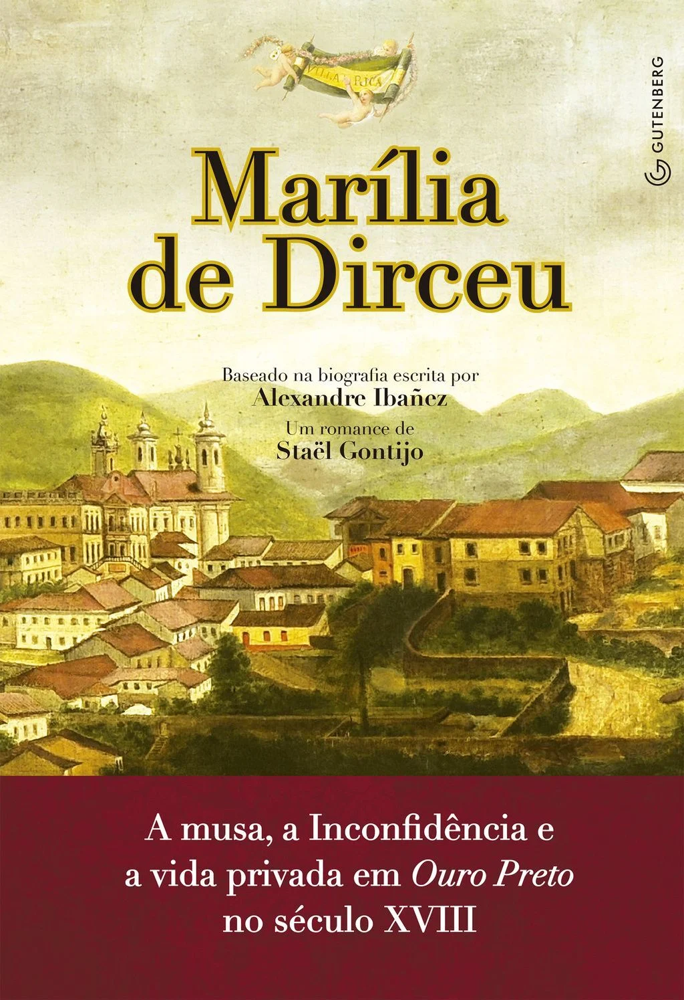
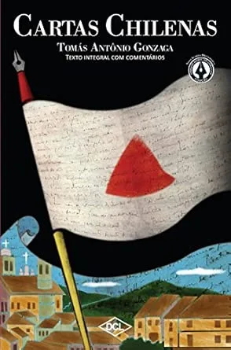

Tomás Antônio Gonzaga
Biografia
Tomás Antônio Gonzaga nasceu em 11 de agosto de 1744 na cidade do Porto, em Portugal, tendo falecido na Ilha de Moçambique, cumprindo pena de degredo, em 1807. Filho do casal Dr. João Bernardo Gonzaga e Tomásia Isabel Clark, formou-se na Universidade de Coimbra em Direito aos 24 anos. Progredindo de advogado do Porto a juiz-de-fora na cidade de Beja, ocupou o cargo de Ouvidor-Geral na comarca de Vila Rica, atual Ouro Preto, na capitania de Minas Gerais.
Em maio de 1789, é identificado como participante da Inconfidência Mineira, sendo detido e levado ao Rio de Janeiro. Neste ponto, redige Marília de Dirceu, uma galeria de poemas para sua noiva, Maria Dorotéia Joaquina de Seixas. O número de suas produções literárias foi pequeno, conquanto tenha sido um sucesso à época, contendo inúmeras edições. Foi também autor da sátira Cartas Chilenas, onde punha em ridículo D. Luís da Cunha Meneses.
Tendo em vista o cumprimento do período restante de punição pela Conjuração Mineira, casou-se novamente e faleceu na África, em 1807.
Obras
Principais poemas:
— Marília de Dirceu: Trata-se de um dos principais símbolos do Arcadismo brasileiro, apresentando elementos bucólicos, ou seja, relativos a uma valorização do ambiente natural, idealizadores e neoclássicos, os quais retomam aspectos culturais da Antiguidade greco-romana. Divide-se em três partes, que giram em torno da relação entre o autor e a Conjuração Mineira. Na primeira, há o retrato de um maravilhoso espaço físico e humano brasileiro, sendo narrado para a musa do protagonista, Marília de Dirceu. Contudo, as contradições sociais, a vida burguesa e a problematização do desmatamento também estão presentes na obra. A segunda seção apresenta caráter mais pessimista, exibindo uma linguagem controlada e incomumente direta para a época, na qual predominava o Barroco e seus excessos na construção sintática.
Ao final, o terceiro segmento encerra todo o corpo literário ao sustentar a melancolia e nostalgia do eu lírico, distanciando-se significativamente do tom mais otimista e propriamente “árcade” do início.

— Cartas Chilenas: Uma sátira atribuída a Gonzaga. Por intermédio da voz de um pseudônimo historicamente obscuro, “Critilo”, aponta os excessos da cidade de Santiago, no Chile; todavia, os argumentos são de tal forma redigidos que o país criticado é visivelmente Minas Gerais, sendo a capital chilena um simulacro de Vila Rica. Composta por 13 cartas, a narrativa é intermediada pelo receptor das mesmas, Doroteu, o qual também simboliza um amigo de Tomás, Cláudio Manuel da Costa. Os abusos de poder relatados no texto são ligados ao governo de Cunha Meneses, definido por seu caráter “faraônico”, onde as instituições estatais empreendiam construções grandiosas para a demonstração da força repressiva do corpo administrativo. Ademais, outro alvo de debate reside na violência e injustiça perpetradas pela governança de Cunha, nomeada como a liderança de “Fanfarrão Minésio”.
Por fim, a estrutura da obra é baseada em versos decassílabos, isto é, de dez sílabas poéticas, e brancos, sem rimas.

Textos escolhidos
“Com os anos, Marília, o gosto falta,
E se entorpece o corpo já cansado:
Triste, o velho cordeiro está deitado,
E o leve filho, sempre alegre, salta.
A mesma formosura
É dote que só goza a mocidade:
Rugam-se as faces, o cabelo alveja,
Mal chega a longa idade.
Que havemos de esperar, Marília bela?
Que vão passando os florescentes dias?
As glórias que vêm tarde, já vêm frias,
E pode, enfim, mudar-se a nossa estrela.
Ah! Não, minha Marília,
Aproveite-se o tempo, antes que faça
O estrago de roubar ao corpo as forças,
E ao semblante a graça!”
— Tomás Antônio Gonzaga, “Marília de Dirceu”.
Referências bibliográficas
-
Academia Brasileira de Letras (ABL)
-
Brasil Escola — Tomás Antônio Gonzaga
-
Toda Matéria — Marília de Dirceu
-
Toda Matéria — Cartas Chilenas
-
Enciclopédia Itaú Cultural — Tomás Antônio Gonzaga
-
Biblioteca Brasiliana Guita e José Mindlin — Marilia de Dirceu
-
Biblioteca Brasiliana Guita e José Mindlin — Cartas chilenas